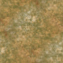

This picture of me with my son was taken in 1999 when we had just moved to Redmond, WA so I could take a job working as a contractor at Microsoft. Despite what you may think, that sign actually existed. It appeared on 156th Ave. NE (Microsoft Way) and stayed there for a couple of days before someone took it down. In the background, you can see the building across the street where the Visual Studio people had their office back then.
I picked five colors from that picture to create the graphics for this page. Here is my palette:
I made three tiles for the background design using Corel PaintShop Pro X and the colors in the palette. The marble texture was created using a soft, fairly small airbrush with which I placed random blotches of all the colors until I acheived a pleasant-looking patter. I then used the Seamless Tiling command under Effects, Image Effects to make sure that the image would tile seamlessly. Here is the tile:

I created a custom gradient using the five colors in my palette and then made a seamless tile out of it by using the Seamless Tiling command again. Here is that tile:
The final tile was a small square in the background color. I created it originally because sometimes the color you defined for a web page didn't exactly match the color in a graphic. It doesn't seem to be a problem anymore, so I'm not bothering to use it on these updated pages.